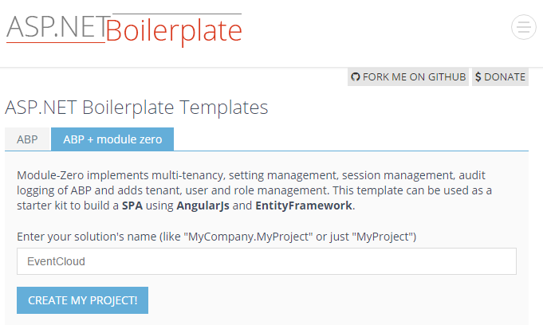

See LIVE DEMO.
In this arcitle, we will see how to develop a SaaS (multi-tenant) application using following frameworks:
You can see the live demo before the article.
We create the startup template from http://aspnetboilerplate.com/Templates:

I selected "ABP + module zero". It creates a ready and working solution for us including a login page, navigation and layout.After download and open the solution with Visual Studio 2013+, we see a layered solution structure including a test project:

First, we select EventCloud.Web as startup project. Solution comes with Entity Framework Code-First Migrations. So, (after restore nuget packages) we open the Package Manager Console (PMC) and run Update-Database command to create the database:

PMC Default project should be EventCloud.EntityFramework (since it contains the migrations). This command creates EventCloud database in local SQL Server. You can change connection string from web.config file.
Now, we can run the application. We see the pre-built login page. Can can enter default as tenancy name, admin as user and 123qwe as password to login:

After login, we see a basic bootstrap based layout:

This is a localized UI with a dynamic menu. Angular layout, routing and basic infrastructure are properly working. I got this project as a base for the event cloud project.
In this article, I will show key parts of the project and explain it. So, please download the sample project, open in Visual Studio 2013+ and run migrations just like above and before reading rest of the article.
In this article, I will follow DDD techniques to create domain (business) layer and application layer.
TODO: BUSINESS RULES
Entities are parts of our domain layer and located under EventCloud.Core project. ASP.NET Boilerplate startup template comes with Tenant, User, Role... entities which are common for most applications. We can customize them based on our needs and add our new application entities.
The basic entity of this project is Event entity:
[Table("AppEvents")]
public class Event : FullAuditedEntity<Guid>, IMustHaveTenant
{
public const int MaxTitleLength = 128;
public const int MaxDescriptionLength = 2048;
public virtual int TenantId { get; set; }
[Required]
[StringLength(MaxTitleLength)]
public virtual string Title { get; protected set; }
[StringLength(MaxDescriptionLength)]
public virtual string Description { get; protected set; }
public virtual DateTime Date { get; protected set; }
public virtual bool IsCancelled { get; protected set; }
/// <summary>
/// Gets or sets the maximum registration count.
/// 0: Unlimited.
/// </summary>
[Range(0, int.MaxValue)]
public virtual int MaxRegistrationCount { get; protected set; }
[ForeignKey("EventId")]
public virtual ICollection<EventRegistration> Registrations { get; protected set; }
/// <summary>
/// We don't make constructor public and forcing to create events using <see cref="Create"/> method.
/// But constructor can not be private since it's used by EntityFramework.
/// Thats why we did it protected.
/// </summary>
protected Event()
{
}
public static Event Create(int tenantId, string title, DateTime date, string description = null, int maxRegistrationCount = 0)
{
var @event = new Event
{
Id = Guid.NewGuid(),
TenantId = tenantId,
Title = title,
Description = description,
MaxRegistrationCount = maxRegistrationCount
};
@event.SetDate(date);
@event.Registrations = new Collection<EventRegistration>();
return @event;
}
public bool IsInPast()
{
return Date < Clock.Now;
}
public bool IsAllowedCancellationTimeEnded()
{
return Date.Subtract(Clock.Now).TotalHours <= 2.0; //2 hours can be defined as Event property and determined per event
}
public void ChangeDate(DateTime date)
{
if (date == Date)
{
return;
}
SetDate(date);
DomainEvents.EventBus.Trigger(new EventDateChangedEvent(this));
}
internal void Cancel()
{
AssertNotInPast();
IsCancelled = true;
}
private void SetDate(DateTime date)
{
AssertNotCancelled();
if (date < Clock.Now)
{
throw new UserFriendlyException("Can not set an event's date in the past!");
}
if (date <= Clock.Now.AddHours(3)) //3 can be configurable per tenant
{
throw new UserFriendlyException("Should set an event's date 3 hours before at least!");
}
Date = date;
DomainEvents.EventBus.Trigger(new EventDateChangedEvent(this));
}
private void AssertNotInPast()
{
if (IsInPast())
{
throw new UserFriendlyException("This event was in the past");
}
}
private void AssertNotCancelled()
{
if (IsCancelled)
{
throw new UserFriendlyException("This event is canceled!");
}
}
}
Event entity has not just get/set properties. Actually, it has not public setters, setters are protected. It has some domain logic. All properties must be changed by the Event entity itself to ensure domain logic is executed. Constructor is also protected. So, the only way to create an Event is the Event.Create method (They can be private normally, but private setters don't work with EntityFramework. Because Entity Framework can not set privates when retrieving an entity from database).
Event implements IMustHaveTenant interface. This is an interface of ASP.NET Boilerplate (ABP) framework and ensures that this entity is per tenant. This is needed for multi-tenancy. Thus, different tenants will have different events and can not see each other's events.
In DDD, entities have domain (business) logic. We have some arbitrary business rules those can be understood easily when you check the entity.
Second entity of our application is EventRegistration:
[Table("AppEventRegistrations")]
public class EventRegistration : CreationAuditedEntity, IMustHaveTenant
{
public int TenantId { get; set; }
[ForeignKey("EventId")]
public virtual Event Event { get; protected set; }
public virtual Guid EventId { get; protected set; }
[ForeignKey("UserId")]
public virtual User User { get; protected set; }
public virtual long UserId { get; protected set; }
/// <summary>
/// We don't make constructor public and forcing to create registrations using <see cref="CreateAsync"/> method.
/// But constructor can not be private since it's used by EntityFramework.
/// Thats why we did it protected.
/// </summary>
protected EventRegistration()
{
}
public async static Task<EventRegistration> CreateAsync(Event @event, User user, IEventRegistrationPolicy registrationPolicy)
{
await registrationPolicy.CheckRegistrationAttemptAsync(@event, user);
return new EventRegistration
{
TenantId = @event.TenantId,
EventId = @event.Id,
Event = @event,
UserId = @user.Id,
User = user
};
}
public async Task CancelAsync(IRepository<EventRegistration> repository)
{
if (repository == null) { throw new ArgumentNullException("repository"); }
if (Event.IsInPast())
{
throw new UserFriendlyException("Can not cancel event which is in the past!");
}
if (Event.IsAllowedCancellationTimeEnded())
{
throw new UserFriendlyException("It's too late to cancel your registration!");
}
await repository.DeleteAsync(this);
}
}
As similar to Event, we have a static Create method. The only way of creating a new EventRegistration is this CreateAsync method. It gets an event, user and a registration policy. It checks if given user can register to the event using registrationPolicy.CheckRegistrationAttemptAsync. This method throws exception if given user can not register to given event.
With such a design, we ensure that all business rules are applied while creating a registration. There is no way of creating a registration without using registration policy.
EventRegistrationPolicy class is defined as shown below:
public class EventRegistrationPolicy : EventCloudServiceBase, IEventRegistrationPolicy
{
private readonly IRepository<EventRegistration> _eventRegistrationRepository;
public EventRegistrationPolicy(IRepository<EventRegistration> eventRegistrationRepository)
{
_eventRegistrationRepository = eventRegistrationRepository;
}
public async Task CheckRegistrationAttemptAsync(Event @event, User user)
{
if (@event == null) { throw new ArgumentNullException("event"); }
if (user == null) { throw new ArgumentNullException("user"); }
CheckEventDate(@event);
await CheckEventRegistrationFrequencyAsync(user);
}
private static void CheckEventDate(Event @event)
{
if (@event.IsInPast())
{
throw new UserFriendlyException("Can not register event in the past!");
}
}
private async Task CheckEventRegistrationFrequencyAsync(User user)
{
var oneMonthAgo = Clock.Now.AddDays(-30);
var maxAllowedEventRegistrationCountInLast30DaysPerUser = await SettingManager.GetSettingValueAsync<int>(EventCloudSettingNames.MaxAllowedEventRegistrationCountInLast30DaysPerUser);
if (maxAllowedEventRegistrationCountInLast30DaysPerUser > 0)
{
var registrationCountInLast30Days = await _eventRegistrationRepository.CountAsync(r => r.UserId == user.Id && r.CreationTime >= oneMonthAgo);
if (registrationCountInLast30Days > maxAllowedEventRegistrationCountInLast30DaysPerUser)
{
throw new UserFriendlyException(string.Format("Can not register to more than {0}", maxAllowedEventRegistrationCountInLast30DaysPerUser));
}
}
}
}
This is an important part of our domain. We have two rules while creating an event registration:
EventManager implements business (domain) logic for events. All Event operations should be executed using this class. It's defined as shown below:
public class EventManager : IEventManager
{
public IEventBus EventBus { get; set; }
private readonly IEventRegistrationPolicy _registrationPolicy;
private readonly IRepository<EventRegistration> _eventRegistrationRepository;
private readonly IRepository<Event, Guid> _eventRepository;
public EventManager(
IEventRegistrationPolicy registrationPolicy,
IRepository<EventRegistration> eventRegistrationRepository,
IRepository<Event, Guid> eventRepository)
{
_registrationPolicy = registrationPolicy;
_eventRegistrationRepository = eventRegistrationRepository;
_eventRepository = eventRepository;
EventBus = NullEventBus.Instance;
}
public async Task<Event> GetAsync(Guid id)
{
var @event = await _eventRepository.FirstOrDefaultAsync(id);
if (@event == null)
{
throw new UserFriendlyException("Could not found the event, maybe it's deleted!");
}
return @event;
}
public async Task CreateAsync(Event @event)
{
await _eventRepository.InsertAsync(@event);
}
public void Cancel(Event @event)
{
@event.Cancel();
EventBus.Trigger(new EventCancelledEvent(@event));
}
public async Task<EventRegistration> RegisterAsync(Event @event, User user)
{
return await _eventRegistrationRepository.InsertAsync(
await EventRegistration.CreateAsync(@event, user, _registrationPolicy)
);
}
public async Task CancelRegistrationAsync(Event @event, User user)
{
var registration = await _eventRegistrationRepository.FirstOrDefaultAsync(r => r.EventId == @event.Id && r.UserId == user.Id);
if (registration == null)
{
//No need to cancel since there is no such a registration
return;
}
await registration.CancelAsync(_eventRegistrationRepository);
}
public async Task<IReadOnlyList<User>> GetRegisteredUsersAsync(Event @event)
{
return await _eventRegistrationRepository
.GetAll()
.Include(registration => registration.User)
.Where(registration => registration.EventId == @event.Id)
.Select(registration => registration.User)
.ToListAsync();
}
}
We may want to define and trigger some domain specific events on some state changes in our application. I defined 2 domain specific events:
We handle these events and notify related users about these changes. Also, I handle EntityCreatedEventDate<Event> (which is a pre-defined ABP event and triggered automatically).
To handle an event, we should define an event handler class:
public class EventUserEmailer :
IEventHandler<EntityCreatedEventData<Event>>,
IEventHandler<EventDateChangedEvent>,
IEventHandler<EventCancelledEvent>,
ITransientDependency
{
public ILogger Logger { get; set; }
private readonly IEventManager _eventManager;
private readonly UserManager _userManager;
public EventUserEmailer(
UserManager userManager,
IEventManager eventManager)
{
_userManager = userManager;
_eventManager = eventManager;
Logger = NullLogger.Instance;
}
[UnitOfWork]
public virtual void HandleEvent(EntityCreatedEventData<Event> eventData)
{
//TODO: Send email to all tenant users as a notification
var users = _userManager
.Users
.Where(u => u.TenantId == eventData.Entity.TenantId)
.ToList();
foreach (var user in users)
{
var message = string.Format("Hey! There is a new event '{0}' on {1}! Want to register?",eventData.Entity.Title, eventData.Entity.Date);
Logger.Debug(string.Format("TODO: Send email to {0} -> {1}", user.EmailAddress, message));
}
}
public void HandleEvent(EventDateChangedEvent eventData)
{
//TODO: Send email to all registered users!
var registeredUsers = AsyncHelper.RunSync(() => _eventManager.GetRegisteredUsersAsync(eventData.Entity));
foreach (var user in registeredUsers)
{
var message = eventData.Entity.Title + " event's date is changed! New date is: " + eventData.Entity.Date;
Logger.Debug(string.Format("TODO: Send email to {0} -> {1}",user.EmailAddress, message));
}
}
public void HandleEvent(EventCancelledEvent eventData)
{
//TODO: Send email to all registered users!
var registeredUsers = AsyncHelper.RunSync(() => _eventManager.GetRegisteredUsersAsync(eventData.Entity));
foreach (var user in registeredUsers)
{
var message = eventData.Entity.Title + " event is canceled!";
Logger.Debug(string.Format("TODO: Send email to {0} -> {1}", user.EmailAddress, message));
}
}
}
We can handle same events in different classes. Here, we handle these events and send email to related users as a notification (Not implemented emailing actually to make the sample application simpler). An event handler should implement IEventHandler<event-type> interface. ABP automatically calls the handler when the event occurs. We can register to more than one event in a single handler, as shown in this example.
...
Use the following links for more information on ASP.NET Boilerplate: